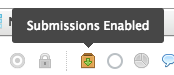

Note: Below I use assessment to refer to either the Schoology assignments, online tests, or discussions, as these three are fully interchangeable. For more information on Schoology online tests and discussions, see the final section of this document.
We use the Schoology materials to communicate to parents and students the work they are expected to have ready for the next class. By maintaining a common structure between all classes, teachers can communicate a lot through their folder structure and a common naming convention.
As mentioned in the Course Setup Tutorial, the best practice for homework is to have a dedicated homework folder (alternatively a folder within each unit could be used). Homework assignments shouldn't be assessed unless they are given a specific grading category with a completion grading scale. Anything that is assessed should be in the unit folders, which communicates to students and parents what is assessed and what the expectation is.
The naming convention for all materials need to communicate the following:
The naming convention does not inform the date the homework is due, but this is built into all Schoology assignments, discussions and tests.
Although homework assignments aren't graded, the dropbox can be used for collecting student work such as drafts or reflections.

Although not necessary, you can keep track of when students complete their homework and when they do not using the Schoology grade book. This will require three steps:
This method may not be as useful as a low-tech alternative. Because not all homework assignments will be checked for completion, it could be confusing for students on how the expectation differs for different homework assignments. A better alternative for communicating student preparedness for class would be by using regular approaches to learning rubrics or reflections.
To help students distinguish between homework requirements and graded assignments, there are two indicators. First, homework requirements should be inside of the homework folder whereas graded assignments and tests should appear somewhere inside the unit folder. Second and more importantly, homework assignments will always begin with "HW" in its title and graded assignments will have a more descriptive start to the title such as "Test", "Project", "Lab", "Essay", etc.
Indicating either formative or summative is best done in the descriptive title, so the above example could be written as "Fictional Writing Formative" or "Fictional Writing Summative". When using Schoology for grading and feedback, this descriptor is slightly repetitive as the category of the assignment already indicates wether it is formative or summative.
Summative assessments may also be indicated by a * at the very beginning of the assignment name, which is valuable when grading in Schoology because of the mastery system.
Providing students reminders for unfinished work is built into Schoology and will appear on the students homepage. However, the best way to do this is by using the assignment dropbox: this could be having students submit a digital copy of their work, a reflection of their work (written, video or audio), or a quick summary of what they submitted. Once students have submitted their work, you can track all the student progress in the assignment.
Alternatively, you can tag graded assignments as "incomplete" or "excused" for students as needed.
Often underutilized tools on Schoology, discussions and tests can be very useful for assessments, in-class activities, or even homework. Below are a few links to get you started: